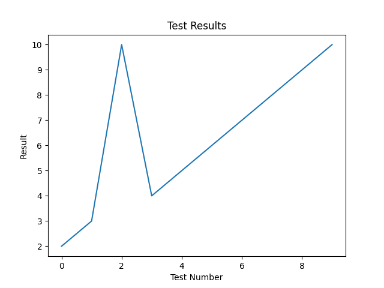
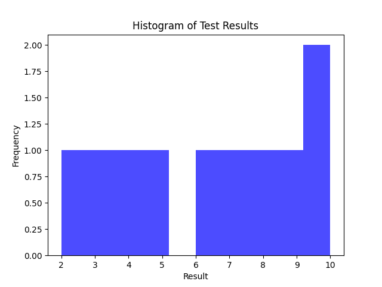
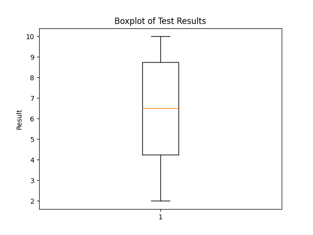

Добре дошли!
Образователна платформа за изучаване на норми на българския език и водене на ефективни дискусии.
Какво ще научите?
- Разлика между разговорен и книжовен език
- Ефективни стратегии за участие в дискусии
- Практическо приложение чрез тестове
Резултати от тестовете:
Общо решени тестове: {{ results|length }}
Среден резултат: {{ mean }}
Стандартно отклонение: {{ std_dev }}
Дисперсия: {{ variance }}
Медиана: {{ median }}
Мода: {{ mode }}
Максимум: {{ maximum }}
Минимум: {{ minimum }}
Обхват: {{ range_ }}
25-ти процентил: {{ percentile_25 }}
75-ти процентил: {{ percentile_75 }}
Интерквартилен обхват: {{ iqr }}
Скюност: {{ skewness }}
Куртоза: {{ kurtosis }}
95-ти процентил: {{ percentile_95 }}
99-ти процентил: {{ percentile_99 }}
90-ти процентил: {{ percentile_90 }}
  За кого е този сайт?
Тази платформа е предназначена за ученици и студенти, които искат да подобрят уменията си по български език чрез практика и разбиране на теорията.
Какво ще намерите тук?
Тук ще намерите теоретични материали, интерактивни упражнения и ресурси за самообучение.